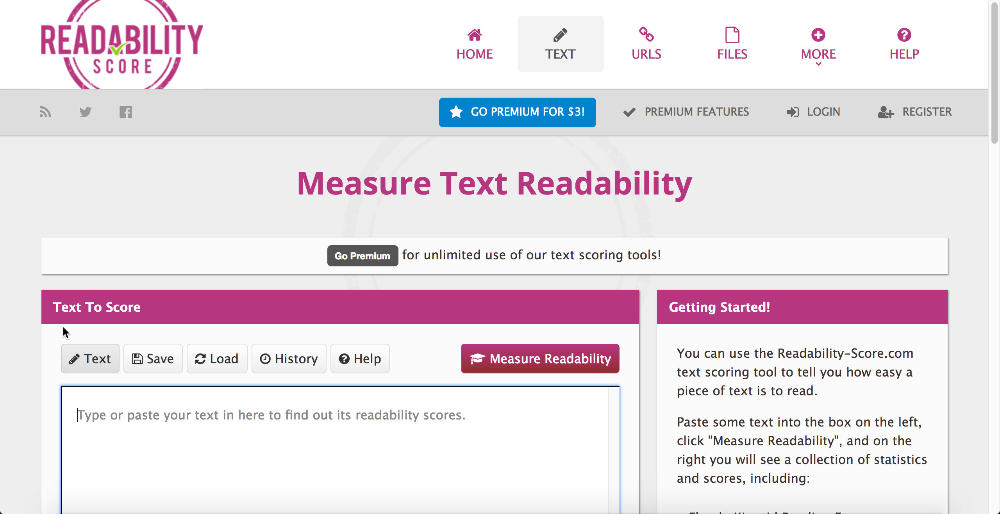
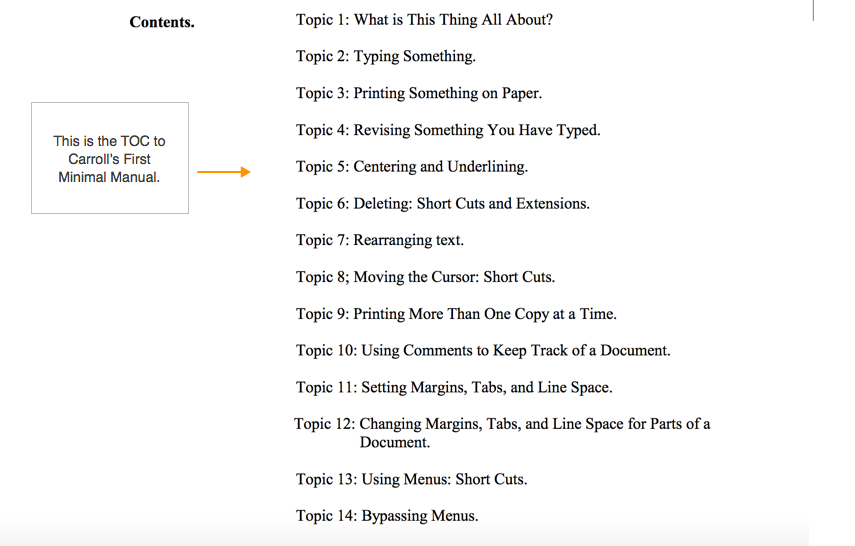
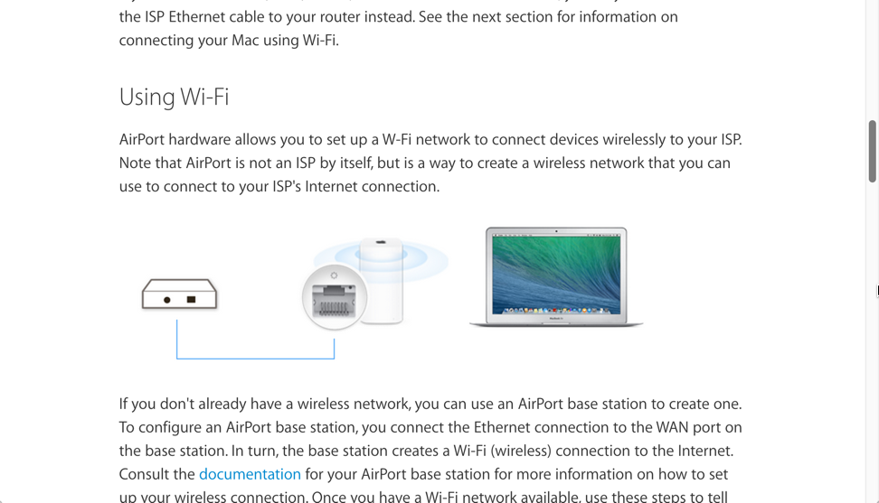
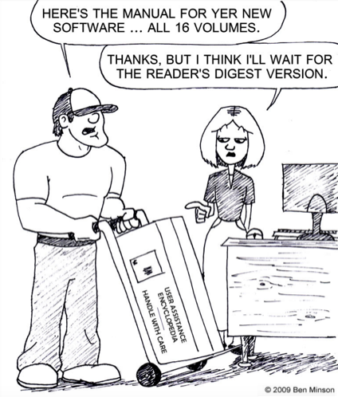
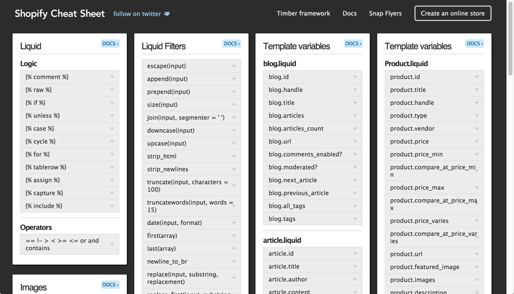
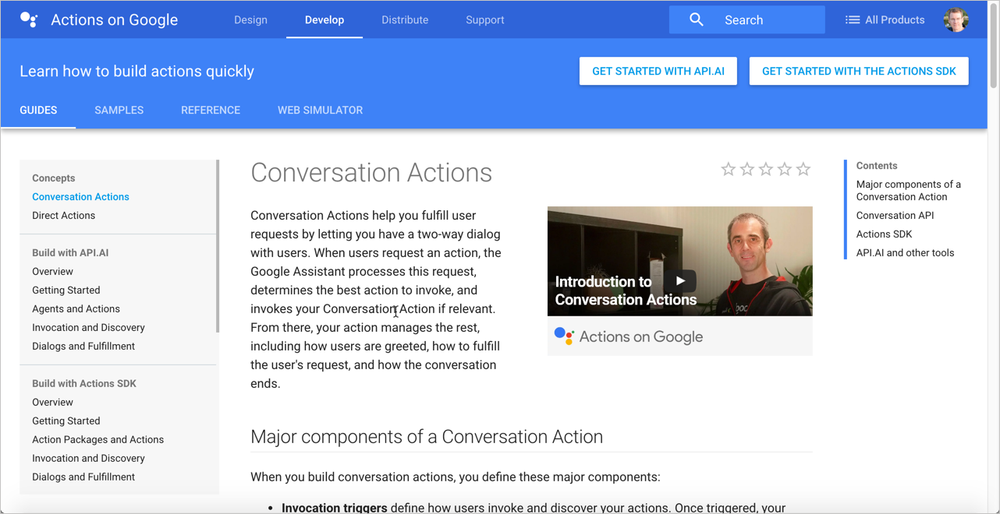
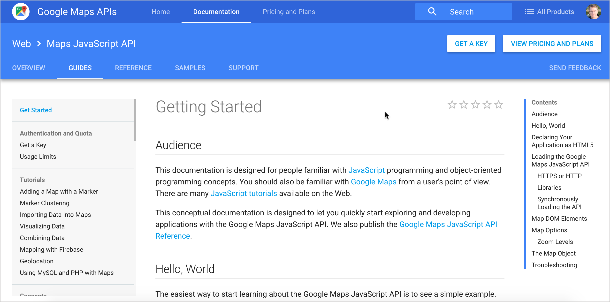

User-Centered Documentation
Applying Universal Principles of Design to Tech Comm
Created by Tom Johnson / @tomjohnson
idratherbewriting.com
January 9, 2017
About me

- Live in Silicon Valley
- Work at Amazon Lab 126
- Focus on developer doc
- Like building sites with Jekyll
- Creative writing background
- Family with 4 daughters
- Love to play basketball
Keyboard Shortcuts
| Next slide | Space bar |
| Full screen | F |
| Index | Esc |
Note: Slides can also move down, such as when I'm exploring a design principle in depth.
If so, the arrow on the lower-right indicates the vertical direction. Test it out now.
Observations in Usability Labs

Universal Principles of Design

Applicable Design Principles
Creating content
- Freeze-Flight-Fight-Forfeit
- Readability
- Legibility
- Signal-to-Noise Ratio
- Picture Superiority Effect
- Performance Load
- Personas
- Normal Distribution
- Design by committee
- Depth of processing
- Iteration
Organizing content
- Modularity
- Hierarchy
- Five Hat Racks
- Progressive Disclosure
- Entry point
- Desire line
- Wayfinding
- Immersion
- Consistency
- Forgiveness
My approach
- Plug into standard design principles
- Apply the principles to documentation
- Group the principles into two main groups:
- Creating content
- Organizing content
- Evaluate the principles against help content
Creating content
Freeze-Flight-Fight-Forfeit
Users under stress go through an emotional state where they first freeze, then potentially flee, or fight, and finally forfeit. Write documentation with the assumption that users will read it in a state of annoyance, anger, and tension. This means readers will scan, jump around, and read quickly.
See also: Ockham's Razor
Readers scan
How Users Read on the WebSummary: They don't. People rarely read Web pages word by word; instead, they scan the page, picking out individual words and sentences.
— Jakob Nielsen, Nielsen Norman Group
Use article summaries

Use lots of subheadings

Make sentences short and easy
We're thinking "great literature" (or at least "product brochure"), while the user’s reality is much closer to "billboard going by at 60 miles an hour." — Steve Krug, Don't Make Me Think

Structure information in lists

Readability
Sentences should be simple, clear, and easy-to-understand, especially as the concepts get more complex. In fact, the more complex the material, the simpler the sentences need to be.
See also: Legibility, Highlighting
Unreadable content — no list formatting
"Nebraska is filled with internationally recognized attractions that draw large crowds of people every year, without fail. In 1996, some of the most popular places were Fort Robinson State Park (355,000 visitors), Scotts Bluff National Monument (132,166), Arbor Lodge State Historical Park & Museum (100,000), Carhenge (86,598), Stuhr Museum of the Prairie Pioneer (60,002), and Buffalo Bill Ranch State Historical Park (28,446)."
Jakob Nielsen, How Users read on the webRewritten for readability — 124% usability improvement
"In 1996, six of the most-visited places in Nebraska were:
- Fort Robinson State Park
- Scotts Bluff National Monument
- Arbor Lodge State Historical Park & Museum
- Carhenge
- Stuhr Museum of the Prairie Pioneer
- Buffalo Bill Ranch State Historical Park"
Determine readability scores
Include a glossary

Legibility
General guidelines:
- 9-12pt font size
- 10-12 words (55 characters) per line
- dark text on light background
- 70% + contrast
- leading 1-4 pts more than font size
- serif vs. san serif doesn't matter
Legibility example from Apple

Signal-to-Noise Ratio
Focus the users' attention on what matters by reducing extraneous information. Eliminate content that is merely "noise" as opposed to meaningful information.
Minimalism shortens exposition, focuses on tasks
The premise behind minimalism is that people learning to use computer software are impatient, mentally active, and curious. They want to begin right away getting their work done.
Focus on real-world tasks
Keep the focus in the task domain

Picture Superiority Effect
Pictures combined with text provides users with better comprehension and recall. Especially as users quickly scan a page, pictures (simple, concrete, and reinforcing a clear message) help users understand the material better.
See also: Iconic Representation, Redundancy
Engineers love the whiteboard

Beginners are especially drawn to visuals

Visuals reduce cognitive load on complex subjects
Show workflows and processes

Use simple line drawings, not photographs

Avoid Chartjunk

Worry about ideas, not high art
Performance Load
The larger, more complex the system, the greater the strain on the user. The greater the strain, the lower the user's success. In many cases, documentation that is too massive deflates the user from even trying at all.
See also: Cost-Benefit, Hierarchy of Needs, Control
Users resist long documentation
When it becomes worth it
"An information retrieval system will tend not to be used whenever it is more painful and troublesome for a customer to have information than for him not to have it."
Mooer's Law
Quick reference guides
Instead of eliminating potentially useful info, provide quick reference guides that help users get oriented quickly with minimal cognitive load and low cost.
What are quick reference guides
- Differs from getting started, but both are welcome
- Main tasks described in compressed, poetry-like form
- Like cliff notes or cheat sheet
- Shows shape of help content
- Especially helpful for lists of functions, classes, methods
Quick reference guides example
Strategy: Create "getting started" guides

Complex process layouts

Quick reference guide layouts

Provide sequential tutorials

Give the big picture

Personas
Create composite descriptions of users based on real research to guide decision-making about design. These personas help you remember that you're not the user. Three primary personas and four secondary personas are sufficient.
Normal Distribution
Document what most users need to know, and omit info that applies to a tiny subset of users (edge cases or obvious information). Adding it into the main documentation dilutes the information for the majority.
Design by Committee
Reduce the number of errors, gaps, and mistakes by involving a number of unbiased experts to influence the content.
Tech writers are usually outsiders to the business environment, not as familiar with the industry context of the product nor as versed in the technology as engineers and QA. As such, involve their input as much as possible to increase the quality and comprehensiveness of the documentation.
Depth of Processing
Users will better learn a system if they have to do more thinking, analysis, and other deep processing activities related to the system.
Consider including activities that have users think and analyze actions in scenarios or other activities, rather than just following step-by-step instructions.
Provide hello-world tutorials

Iteration
Products usually start out simple and get increasingly more detailed and refined with each additional iteration. It often takes multiple iterations — through reviews, user feedback, testing, etc. — to achieve a high level of quality.
When writing doc, recognize the iterative element behind writing documentation. Publishing version 1 shouldn't be considered done, just the first iteration of the content.
Organizing content
Modularity
Break up content into independent topics that can be viewed, understood, and updated independent of the whole. A topic or chunk should not be so interconnected with the whole that it cannot stand on its own.
Users read non-sequentially
You can just read the sections about the tasks you want to do.— John Carroll, The Nurnberg Funnel
Modularity sounds great. Where do things go wrong?
1. Writers assume building blocks equal presentation

2. Writers auto-burst print books based on h2

"Frankenbooks": Modularity gone wrong
A Frankenbook is organized neither for linear reading, nor for random access. No matter where you land in it, you are in the middle of a maze with buttons to move up, down, or sideways, but no means of finding the end of any thread of narrative, great or small. Every page is page 297 and none of them answer your question .... .— Mark Baker, Every Page Is Page One
Treat "Every Page Is Page One"

Create self-contained topics

Provide context before

Provide context after

Modularity best practices
- Make topics meaningful enough to stand on their own
- Don't be afraid to make long topics
- Assume users might be starting at that page
- Link to any necessary context (prereqs, assumptions) at the beginning of the topic
Hierarchy
A hierarchical outline of the content (with parent and child items organized in trees) helps users both understand and visualize complex information.
Hierarchies that are too complex, or which hide parent-child displays, fail to communicate. Find a balance that allows users to take in the hierarchy at a glance in a meaningful way.
Hierarchy provides meaning
Navigation provides a narrative for people to follow on the web.
— James Kalbach, Designing Web Navigation: Optimizing the User Experience
Google hierarchy example
Tip: Shorten titles in your navigation
| "Getting Started Building Widgets for System Z" |
→ | "Build widgets" |
| "About Managing Language Settings in Product Z" |
→ | "Manage language settings" |
| "Configuring the Gizmo Settings for Development Environments" |
→ | "Set up developer environment" |
Sentry hierarchy example

Hierarchy best practices
- Limit navigation (hierarchy) to 3 levels, placed on left
- Allow users to see the full navigation menu at a glance
- Break up massive navigation into multiple menus
- Provide a way to navigate from one nav menu to another
- Put page-level navigation on the page, preferably on right
Five Hat Racks
You can organize content in 5 ways:
- Alphabet
- Time
- Location
- Continuum (degree)
- Category (likeness)
Generally, doc is grouped by category more than location (except with context-sensitive help).
Five Hat Racks Example


Group by category, not location

Faceted navigation
Faceted navigation is arguably the most significant search innovation of the past decade.
— Peter Morville, Search Patterns
Tags are practical facets
With tags, your files and photos can be in two, three, or more “places” at once.— Gene Smith, People-Powered Metadata for the Social Web
Progressive Disclosure
Layer information so that you don't present everything to the user at once. Make some information available only at secondary or tertiary levels of navigation.
See also: Layering, Constraint
Strip tease your information
Progressive disclosure is the best tool so far: show people the basics first, and once they understand that, allow them to get to the expert features. But don't show everything all at once or you will only confuse people and they will waste endless time messing with features that they don't need yet.— Jakob Nielsen, Interaction Design
Example of progressive information disclosure

An example of progressive disclosure in the UI

Different sidebars for different layers

Entry Point
The entry point to your system should orient users and allow them to easily get started. Avoid barriers that block, confuse, or otherwise hinder the user's progress to their goal.
Use homepage as routing page

Example Entry Point with Azure Docs

Desire Line
Look at common paths users take through information, and then make those paths more prominent and standard.
Sample desire line

Determine lines through metrics

80/20 Rule

Put top 10 articles on entry point
If users consistently go to the same 10 topics, put those topics front and center in your help system to facilitate a more standard path to those topics.
Wayfinding
Provide navigational signposts — such as breadcrumbs or other workflow maps — to help orient users as to where they are in a larger system. Don't assume that the user navigated to the current page following the path you intended.
Example breadcrumbs from Facebook

Immersion
Users desire to be immersed in the application or system they're using rather than leaving that system to consult a separate, external system for help. Allow users to stay immersed in the application context by bringing help into the application.
See also: Fitt's Law
Users don't want to use help
The conclusion of most studies about how people use help is that people don't use help.-- Mike Hughes, I'd Rather Be Writing podcast
Audio excerpt

Bring help into the UI

Fitt's Law
The further a user must travel with their cursor, the less accuracy the user will have in reaching the target object.
— Travis Lowdermilk, User-centered Design
Much of the UI is text

This is the same UI without text
WordPress UI without text
Youtube UI without text
Consistency
Follow the same patterns (navigation, naming, locations, look and feel) from one instance of your tech docs to another. As much as possible, maintain consistency with industry-wide help standards and approaches.
See also: Interference Effects
Same experience across doc sets

Common patterns with help systems
- Navigation on left
- Search feature
- On-page TOC either on right (fixed) or center
- Login in upper-right
- Steps arranged in list numbering
Google doc follows common industry patterns
Forgiveness
Taking risks, experimenting, and exploring systems on their own helps users learn. When users make errors during these activities, help guide them back on the right path.
Sample help in console with Jekyll includes

Find all error messages in your system

Test everything yourself

Summary
Creating content
- Freeze-Flight-Fight-Forfeit
- Readability
- Legibility
- Signal-to-Noise Ratio
- Picture Superiority Effect
- Performance Load
- Personas
- Normal Distribution
- Design by Committee
- Depth of Processing
- Iteration
Organizing content
- Modularity
- Hierarchy
- Five Hat Racks
- Progressive Disclosure
- Entry Point
- Desire Line
- Wayfinding
- Immersion
- Consistency
- Forgiveness
Questions?
Thanks!

Tom Johnson
— idratherbewriting.com
— @tomjohnson
— tomjoht@gmail.com